お知らせ・アンケート／作成・管理する職員向け
お知らせを承認申請・公開・公開停止する
作成する職員と承認する管理者の操作を分けて説明します。公開後に直すときは、下書きへ戻してから再申請します。
「お知らせ管理」→ 対象のお知らせのプレビュー
1作成者が下書きを見直し、承認申請する
プレビューの本文・添付と、一覧の配信対象・期間を確認します。問題がなければ「承認申請する」を押します。状態が「承認待ち」になり、申請履歴が残ります。承認されるまでは保護者へ公開されません。


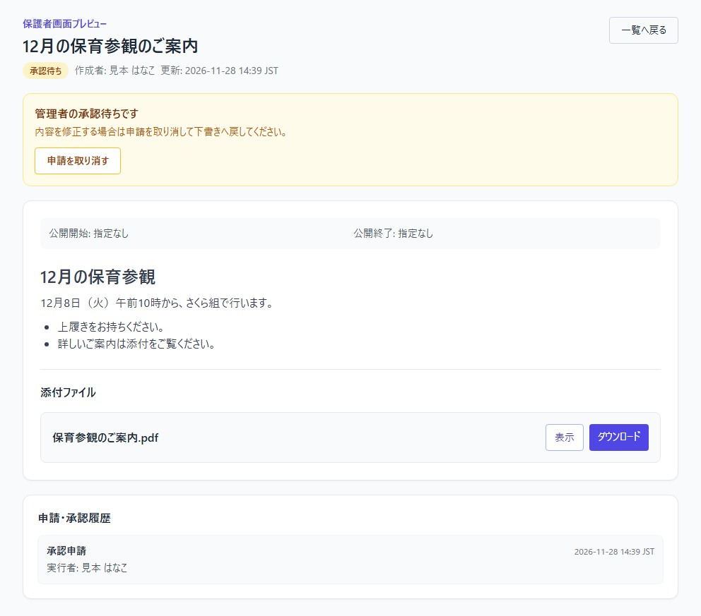
2申請を取り消す・差し戻された内容を直す
承認待ちの内容を直す場合は「申請を取り消す」を押し、下書きに戻して編集します。管理者から差し戻された場合も、履歴の理由を読み、下書きを修正して再申請します。申請取消だけでは本文を変更したことにはなりません。

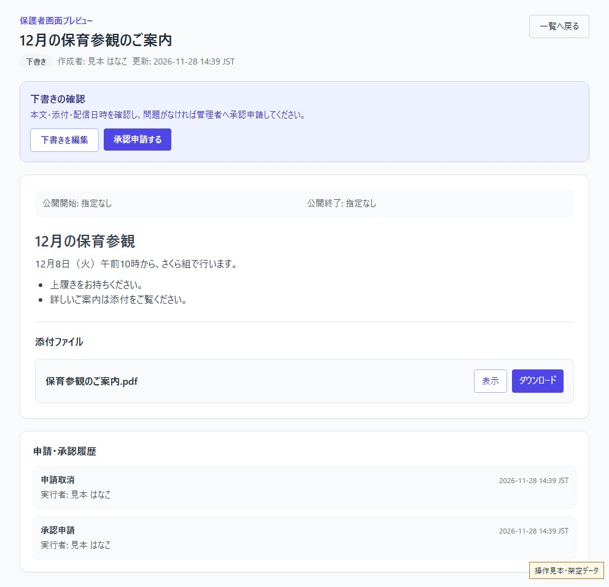

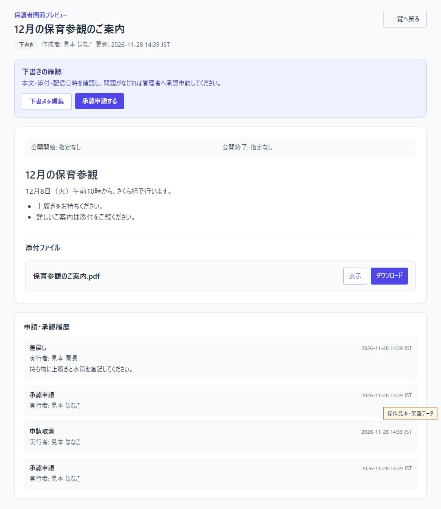
3管理者が承認または差戻しを行う
管理者で承認待ちのお知らせを開きます。一覧の配信対象・公開期間も確認したうえで、問題がなければ「承認して公開」を押します。承認コメントは任意です。直してほしい点がある場合は、理由を記入して「理由を付けて差戻す」を押します。
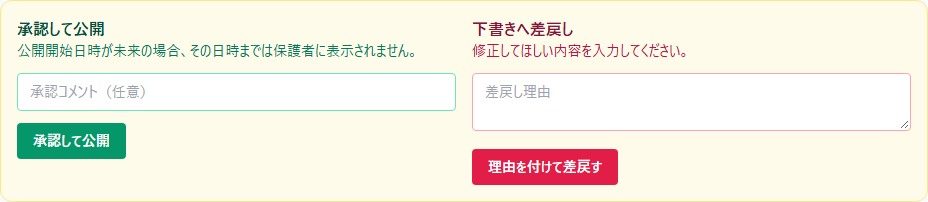
承認画面全体と、理由が空欄のときの案内

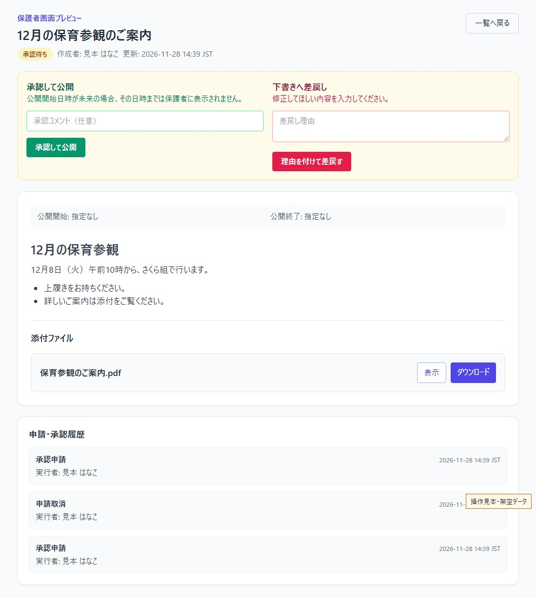

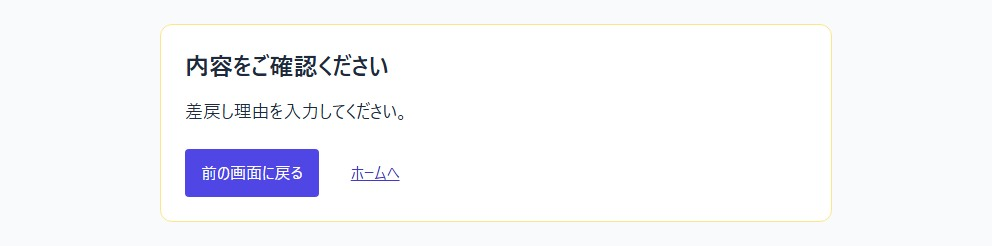
一般の編集担当者には管理者の承認操作はできません。差戻し理由がない場合は、理由を入力してからやり直します。
4公開状態と既読数を確認する
承認後は「公開中」になります。ただし、公開開始が未来の場合は開始時刻まで、公開終了を過ぎた場合は終了後、対象者には表示されません。公開期間と配信対象を一緒に確認してください。

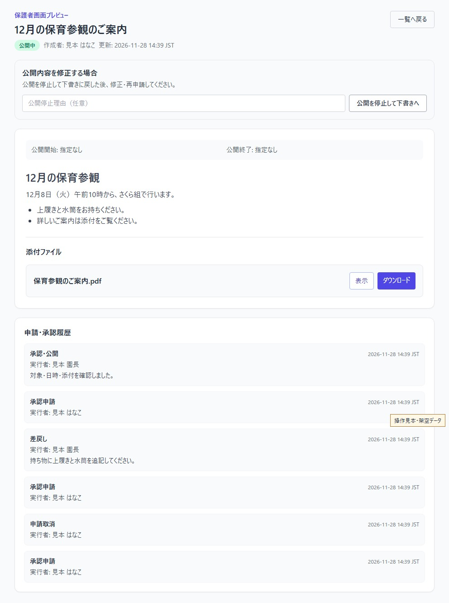

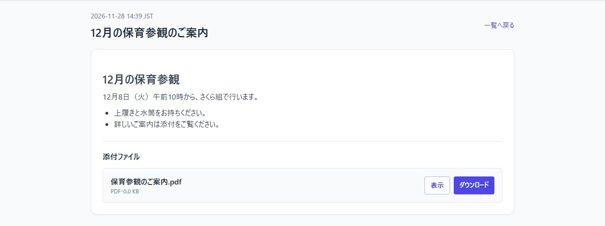

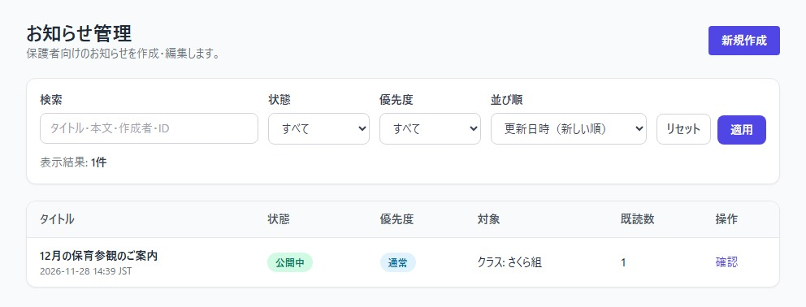
既読数は開かれた記録の数です。家庭数や園児数と同じとは限りません。既読が付いたことだけで、全員が内容を理解したとは判断しないでください。
5公開を止めて、必要な修正を行う
管理者が公開中のお知らせを開き、「公開停止して下書きへ」を押します。必要に応じて停止理由を入力します。状態が下書きに戻ったことを確かめて編集し、再び承認申請します。
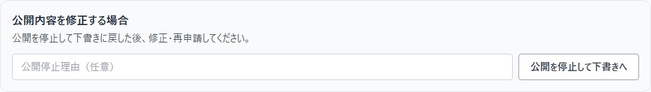
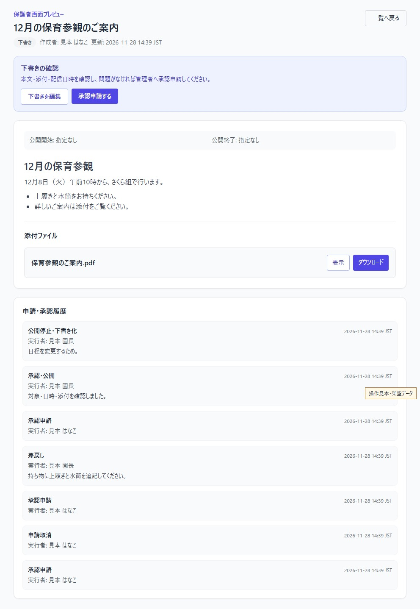